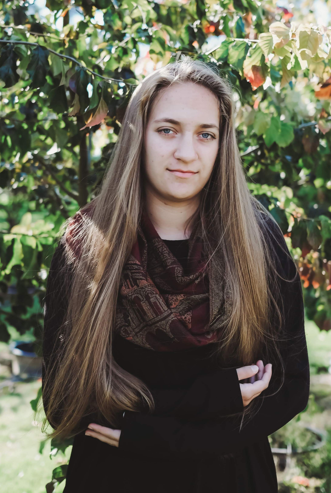

Morrow
King, Student, Programmer
Hi everyone! My name is Morrow, and I am just a plain out full weirdo. I created Kingdom of Nerds when I was only 16, to offer up a home to all the outcasts who like me, just didn’t fit in anywhere. So a little about myself: I am a fantasy and computer nerd through and through. I absolutely love Lord of the Rings, which I consider to be the greatest work of literature ever compiled. I have Irish blood in me, which I am extremely proud of, and I intend to die in Ireland once I grow old. I also tend to be quite anti-social, I’m an INTP (look it up if you don’t know XD), and I’m also single. So, Live Your Life and till the morrow!
Email me: morrowseer98@gmail.com

Warlow
Nerd Ruler, University student, Programmer
Hello fellow Konians! I’m Warlow and a pretty big nerd about a lot of things, especially musicals and the performances of Anthony Warlow! Usually, I am pretty introverted, but I tend to open up more when I get to know people, especially online. Currently, I am a student in university studying information and technology. I am honoured to serve as one of your nerdy rulers and to spend time nerding out with you all :)
Email me: phantomoftheaustralianopera@gmail.com
Alprhos
Nerd Ruler, Student
Hello All. I am Alphros and I am a huge nerd. I like reading some specific history or philosophy books or even books on politics and debate strategies. I listen A LOT to Hamilton and a little less to Beetlejuice as those are the two of my favorite Musicals. I am an introvert and a big one, yet I am amazing at projecting my vocals and doing speeches. I am a huge History and Politics nerd too.
Lyn
Event Planner, Student, Violinist
Heyo everyone! I am Lyn and I am a huge huge huge music nerd and love writing. I have a lot of interests including reading, writing, rping, music, sports (air hockey, frisbee), cards, procrastinating, depression, loneliness, going down the emotional road I see, some more music, friends, and more music and you get the idea lol. To anyone reading this thingy, I hope you enjoy your stay at KoN! Long live the outcasts!
Christine
General, Student, Singer
Hello, I'm christine and I have two main things I love, those being learning and music. I sing a lot, like, all the time, just constantly lol. I love listening to musicals, specifically (as of right now) Phantom of the Opera, Hadestown, and Jekyll and Hyde. I also love learning, specifically math, physical sciences, and English, hence I found this server.